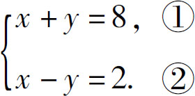
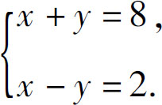
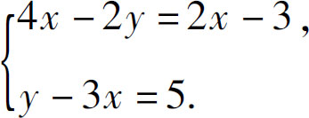
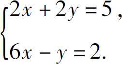

我们把多项式的规律和等式的性质结合起来，一起研究一下二元一次方程组的解法．什么叫二元呢？二元就是两个变量．什么叫一次？一次就是这两个变量只会相互加减，不会相互乘除．什么叫方程？方程就是含有变量的等式．而方程组呢？就是由几个方程联合而成的一组方程．二元一次方程组都是由两个相互独立的等式组成的．
比如：两数之和是8，两数之差是2，请问这两个数是多少？
这个题中有两个不知道的数字，那肯定是二元了；两个变量之间又只有加减没有乘除，那肯定就是一次了；而且还有和、差两个独立的等式，所以就可以通过二元一次方程组来解决它．如果假设其中一个是x ，另一个是y ，那么把方程组写下来就是

这样的方程组应该怎么求解呢？首先，考虑一个独立的二元一次方程能不能得到解．以x ＋y ＝8为例，相加等于8的两个数字的组合有很多组：1和7相加等于8，2和6相加也等于8，3和5也可以，如果再算上小数分数，相加等于8的两个数的组合就有无数个．请注意，这个时候不能说一个二元一次方程无解，而应该说它有无数个解．为什么有无数个解呢？如果把x 从方程的左边移动到右边，变成－x ，那就是y ＝8－x ，这就表示对于任何一个x 而言，只要用8减去它就可以得到一个y ，这两个数在一起，加起来一定会等于8，所以，一个二元一次方程中有两个未知数，是不能得到唯一解的，因为它只是描述了两个变量之间的相互关系．
为什么两个独立的方程联合在一起就有解了呢？因为另一个方程同样可以得到这样一组对应关系，比如在x －y ＝2中，我们同样可以得到y ＝x －2．虽然对于任何一个x ，都可以找到一个y 满足这个方程，但是，要同时满足这两个方程就不那么简单了．我们随便拿一组满足方程①的数字，代入到方程②中就会发现，结果并不一定相等，比如1＋7＝8，但是1－7却不等于2．因此要想同时满足两个方程式，就必须想办法把这两个方程式联合起来，把一个方程里有两个未知数的等式变成只有一个未知数的方程．但具体要怎么联合呢？有两种办法．
第一种办法是利用代数的基本性质．我们知道，一个变量不仅可以代表数字，而且可以代表一个算式，比如，在第一个方程中，我们得到了y ＝8－x ，也就是说，用8－x 这个算式就可以代替第二个方程中的y ，得到x －（8－x ）＝2，只要把这个方程中的x 求出来，整个方程组的唯一正确的解就找到了，这种方法叫作代入消元法．代入指的是把一个方程中的y 等于多少x 代入到另一个方程中，消元指的是消去一个未知数．
在此题中：x －（8－x ）＝2，括号外边是减号，去括号后8和x 需要变号，得到x －8＋x ＝2，化简得到2x －8＝2，然后把－8移动到右边变成＋8，得到2x ＝2＋8，即2x ＝10，两边除以x 的系数2，得到x ＝5，那么y 呢？化简之前我们知道y ＝8－x ，把x ＝5代入该算式得到y ＝8－5＝3．
以上就是二元一次方程组的第一种解法——代入消元法．也就是把两个独立方程中的任何一个，先化简成y 等于多少x 的形式；再把这个等式代入到另一个方程中去，求出x 的数值；最后，再把x 的数值代入这个y 等于多少x 的等式中，得到y 的数值．当然，在实际处理问题的过程中，把x 表示为多少y 的形式也是可以的．这种方法利用的是代数的基本特征．
接下来，我们再研究一下第二种解法．
我们知道，等式具有协变性的特征，如果把这两个方程组看成一个整体，就可以直接在它们之间实现加减乘除的运算．因为等式左右两边同时加减相等的两个数以后，等式仍然成立，所以，可以让第一个方程的左边加减第二个方程的左边，再让第一个方程的右边加减第二个方程的右边，等式一定仍然成立．下面，就用这种方式求解一下原来的方程组：

如果我们将方程左右两侧同时相加，得到x ＋y ＋x －y ＝8＋2，化简合并，得到2x ＝10，消去x 的系数2，得到x ＝5．如果我们先将方程左右两侧相减，就会得到（x ＋y ）－（x －y ）＝8－2，去括号，得到x ＋y －x ＋y ＝6，化简合并，得到2y ＝6，消去y 的系数2，得到y ＝3．
由于这种办法需要在两个方程式之间相互加减，所以又叫加减消元法．
根据上述分析，好像用加减消元法要简单一点，其实也不一定，用哪种方法更简单，主要取决于方程组的具体形式．
比如方程：

在这组方程中，x 、y 都分布在方＝5．程式的两边，而且系数也不一样，通过简单的加减并不能实现消减变量的目的，所以还是用代入消元求解法更简单．不过，如果方程组的系数差的不多，或者正好是整数倍，还是可以利用加减消元的．比如：

在这组方程中，x 的系数一个正好是另一＝2．个的3倍，y 的系数一个正好是另一个的－2倍，所以我们就可以先在第一个方程的左右两侧，同时乘以3，得到6x ＋6y ＝15，然后再和第二个方程相减，这样就可以消除变量x ．也可以把第二个方程左右两边同时乘以2，得到12x －2y ＝4，然后再和第一个方程相加，这样就可以消去变量y ．最后，总结一下解二元一次方程组的方法：二元一次方程组求解的关键是消元，消元有两种办法——代入消元和加减消元．具体使用哪种办法根据方程组的形式而定：如果同一个变量的系数相等或者相差整数倍，就优先使用加减消元法；如果方程中有一个未知数只出现了一次，而且系数是1，就优先使用代入消元法．
二元一次方程是从小学到初中阶段学习的第一个有实用意义的数学模型，一些在小学阶段看起来有难度的问题，都可以通过二元一次方程组轻松地解决．比如鸡兔同笼问题、绳长和井深问题、两数和差问题．不过我们学来学去，却常常会产生这样一种感觉：这一类应用题，好像是数学老师特地为了刁难学生而出的．比如鸡兔同笼问题，在实际生活中，怎么可能有人不数鸡有几只兔子有几只，而去分别数脑袋和腿呢？那么，这类问题有没有实际用途？